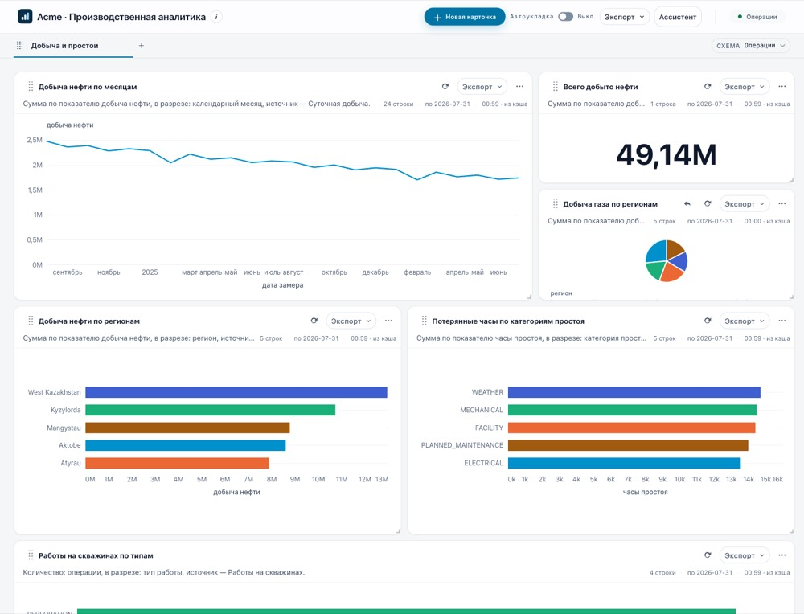
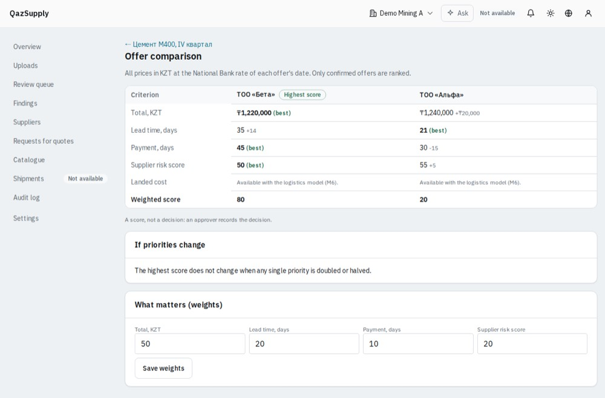
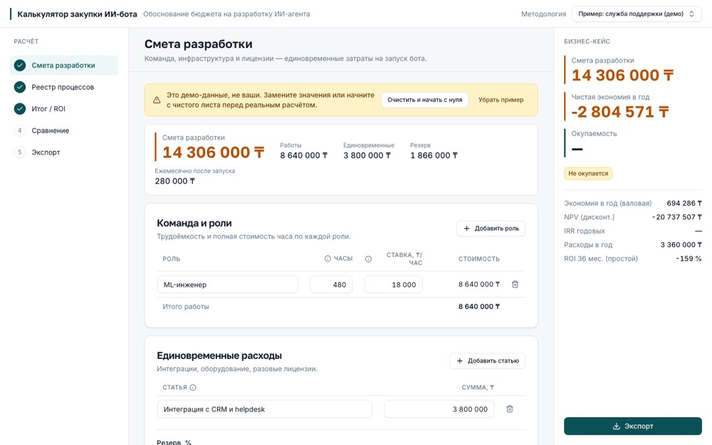
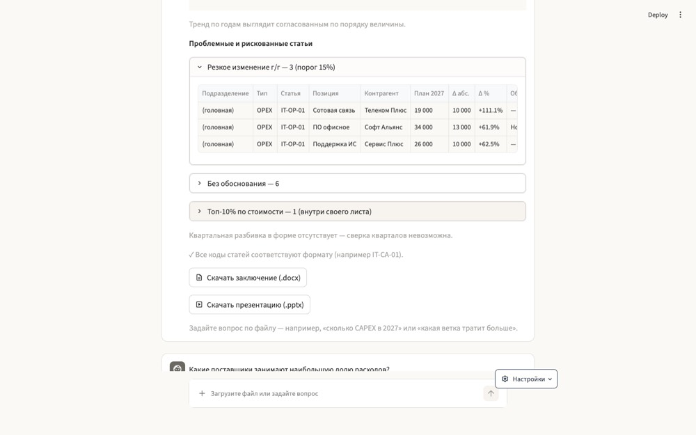

Numbers
Work
Text-to-SQL platform on the live data warehouse for the Management Board and Board of Directors: the model picks from a hand-written semantic layer and fixed code builds every query. AI audit platform for IT budgets across a 64-company group.
Production software for energy, construction and healthcare clients. RAG agents and OCR-to-CRM/ERP automation that cut manual document processing 60%.
2D drawings to checked BIM models with a citation-only copilot. Piloting with KazTransOil's R&D Centre.
Legal RAG for the General Prosecutor's Office of Kazakhstan: 3,350+ articles, every citation verified against source text. Multi-agent control kernel with human approval.
Data baseline from 1,000+ pipeline-network records for the AI-adoption review.
Open source




semantic-layer-dashboard
Natural-language dashboards where the LLM never writes SQL. Co-authored with Nurdaulet Khaidar.
qazsupply-procurement-os
Supplier vetting and spend analysis for Kazakhstan. Multi-tenant, Postgres RLS.
Axion-Bim
IFC and IDS checks, quantity deltas and BCF issues.
MeetingOS
Every decision checked against a transcript quote. Built on Voicebox by Jamie Pine (MIT).
agent-roi-calculator
Savings, payback, NPV and IRR for AI-agent budgets.
budget-audit-assistant
Chat-first audit of corporate IT-budget workbooks.
volve-hybrid-forecast
Arps decline curves plus learned residuals on the open Volve data.
novamed-clinic-site
Bilingual (RU/KZ) clinic site with WhatsApp booking.
alabs-studio
Portfolio and intake site for an engineering studio.
Stack
